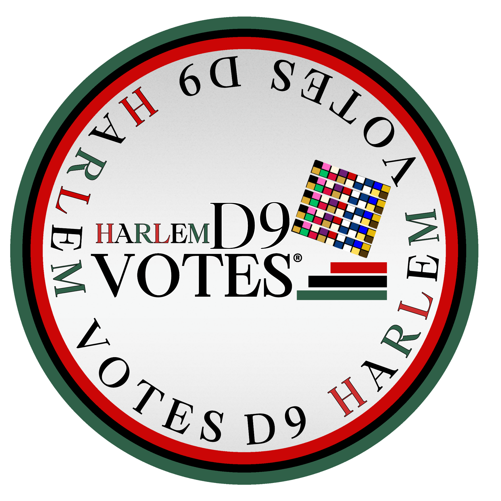

EARLY LAUNCH
National Voter Registration Day
Tuesday, September 15, 2026
Launch in recognition of National Voter Registration Day and continue through Monday, October 5, 2026.

EDUCATE • ENGAGE • EMPOWER • VOTE
Voter-Eligible. Voter-Educated. Voter-Ready.
Through the Harlem Youth Registered & Ready To Vote Campaign, we are inviting Central Harlem high schools to partner with us in helping eligible students pre-register or register to vote, prepare first-time voters for the Tuesday, November 3, 2026 General Election, and build the knowledge, confidence, and habits to participate in every election throughout their lives.
From First Vote to Lifelong Voter

FOR CENTRAL HARLEM HIGH SCHOOLS
D9 Harlem Votes® will work with your existing staff, departments, clubs, or programs already engaged in civic education, student leadership, or community engagement. Schools do not need to create a new program to participate.
EARLY LAUNCH
Tuesday, September 15, 2026
Launch in recognition of National Voter Registration Day and continue through Monday, October 5, 2026.
LATER LAUNCH
Monday, October 5–Friday, October 9, 2026
Schools needing more planning time may launch during National Voter Education Week and continue through Tuesday, October 20, 2026.
TWO WAYS FOR STUDENTS TO PARTICIPATE
OPTION ONE
D9 Harlem Votes® provides official voter registration/pre-registration forms. The school makes the forms available, keeps completed applications secure, and D9 Harlem Votes® coordinates pickup.
OPTION TWO
Students may complete an application online using the official voter-registration portal on a school computer, tablet, phone, or their own device.
CAMPAIGN TRACKING
The school liaison can report aggregate totals to D9 Harlem Votes®: paper applications completed, online applications reported by students, first-time General Election voters identified, and total students engaged. Student names, addresses, dates of birth, political-party information, and voter ID information are not needed for the D9 Harlem Votes® campaign count.
CAMPAIGN VISIBILITY
Participating schools will receive campaign graphics and the social-media/profile frame. D9 Harlem Votes® will follow each school's policies regarding student photographs, media releases, parental/guardian consent, and social-media participation.

SCHOOL LIAISON TOOLKIT
Use these basic quality-control steps when students complete paper applications. Schools will receive more detailed instructions with the form drop-off.
Print clearly and complete paper applications in blue or black ink.
If a student makes a significant mistake, D9 Harlem Votes® recommends starting a fresh application rather than making multiple cross-outs or scratch-outs.
Enter the residential address where the student lives. If mail is received somewhere else, include a reliable mailing address in the mailing-address section.
A student does not have to select a political party to vote in a General Election. In general, a voter must be enrolled in a political party to vote in that party's primary election.
Eligible 16- and 17-year-olds may pre-register. Their registration remains pending until they become eligible to vote at age 18.
Before the form is turned in, review required fields and make sure the student signs and dates the application.
Completed applications contain personal information. Schools should keep them in the designated secure location until D9 Harlem Votes® pickup.
Students registering online should tell the liaison only that they completed the online application so the school can report an aggregate campaign count.
Official voter-registration information: Always rely on the current New York State and New York City Boards of Elections instructions for legal requirements and form processing.
FIRST-TIME VOTER? GET READY.
Students who will be eligible to vote in the Tuesday, November 3, 2026 General Election should know where to vote, when to vote, what to expect at the polls, and what is on their ballot before Election Day.
Use your home address to find your Election Day and Early Voting locations.
Find My Poll Site → 02Learn when identification may be requested and what options first-time voters have.
Learn About Voter ID → 03Use the NYC poll-site tool to view election information and your sample ballot when available.
See What's on My Ballot → 04Learn about the five 2026 NYC Charter ballot proposals and what a Yes or No vote means.
View the 5 Ballot Proposals →